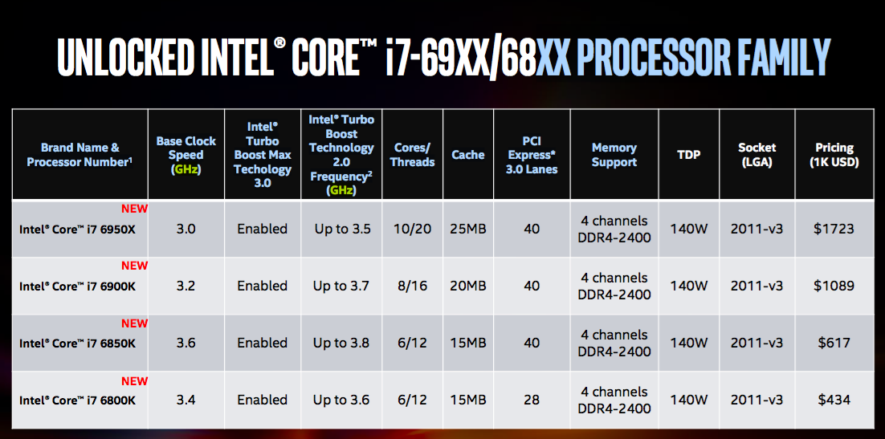

В то время как «война мегагерц» завершилась, наступила новая эра, когда крупнейшие производители процессоров соревнуются, в чьём детище больше ядер. Компания Intel, например, в рамках выставки Computex анонсировала свой новый процессор Core i7-6950X Extreme Edition, который может похвастать аж десятью ядрами. Конечно, Intel ещё в 2011 году выпустила 10-ядерный серверный процессор Xeon, но для домашних компьютеров подобное решение представлено компанией впервые.
Новый процессор работает на частоте 3 ГГц с автоматическим разгоном под нагрузкой до 3,5 ГГц по технологии Turbo Boost 3.0, а его 25 мегабайт кеш-памяти действительно впечатляют. Разумеется, новые технологии стоят немалых денег. Желающим обзавестись таким процессором следует иметь в виду, что стоить он будет 1723 доллара. По заверениям официальных представителей Intel, в обработке 3D-графики новый процессор в два раза быстрее, нежели четырёхъядерный i7-6700K, а также на 35% быстрее, чем Core i7-5960X. Когда же речь заходит об обработке 4К-видео, новый чип демонстрирует прирост производительности до 65%.
Новая линейка будет также включать 8-ядерный процессор i7-6900K за 1089 долларов, а также 6-ядерные i7-6850K за 617 долларов и i7-6800K за 434 доллара. Все процессоры новой линейки полностью разблокированы для оверклокеров, так что последние смогут дополнительно разогнать их под свои нужды. Новые i7 также поддерживают оперативную память DDR4-2400. Если цена на новые модели процессоров Intel вас смущает, можно подождать симметричного ответа компании AMD, самые мощные процессоры которой на сегодняшний день могут похвастать лишь восемью ядрами.